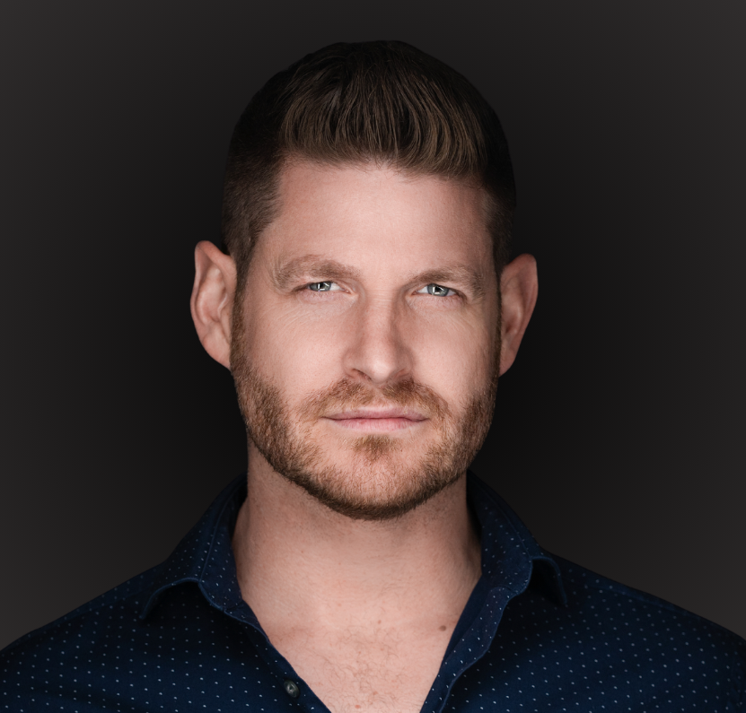
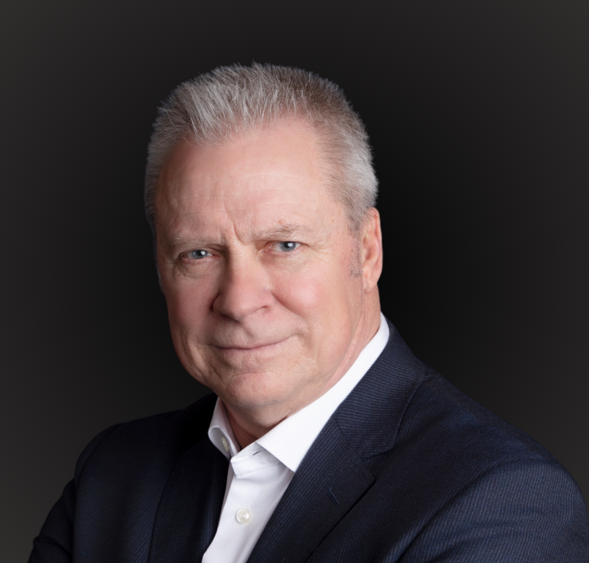
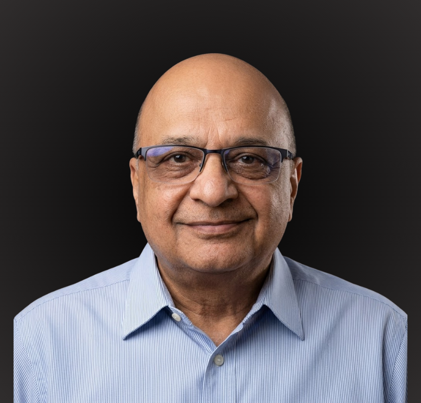

Founders, operators, and advisors with the regulatory, capital-markets, and engineering backgrounds the settlement layer requires. Full bios, advisors, and the hiring plan tied to capital raised are in the data room. The summary is below.
Canadian securities counsel, exempt-market compliance, capital-markets origination, and enterprise systems architecture, the backgrounds required to stand up a regulated settlement layer.
The founders leading the 4orm Finance build. Extended bios and the advisory bench in the data room.

FOUNDER · CEO4orm Finance
Founder and CEO of 4orm Finance. Career rooted in high-consequence operations and disciplined risk management.
As Founder and CEO of 4orm Finance, Chad Johnston brings a background rooted in high-consequence operations and disciplined risk management. His career began in Canada's oil and gas industry, where he led teams responsible for the identification, mitigation, and control of life-critical hazards on major industrial projects, including the multi-billion-dollar CNRL Horizon Coker Upgrade. Working in environments where precision, operational discipline, and sound decision-making could mean the difference between a safe operation and a multi-fatality incident shaped the leadership principles that continue to guide him today.
Over the past decade, Chad has applied that operating discipline to entrepreneurship, founding and operating businesses across a range of sectors including commercial access control and automation, renewable energy, and financial technology. The through-line has remained consistent: design systems that perform under pressure, identify risk before it becomes failure, document the decisions behind them, and remain accountable for the outcome.
For the past six years, Chad worked extensively within Canada's financial education sector, where his focus extended beyond education itself to the development of operational support systems, software support, and structured processes serving tens of thousands of retail investors. This placed him in continuous contact with the practical realities of Canadian capital markets, providing a unique perspective on how capital is raised, how money moves, how digital assets are acquired and transferred, and where existing financial infrastructure creates unnecessary friction and risk.
During that time, Chad witnessed firsthand the consequences of weaknesses in cross-border digital asset transfers and investor protection. Working directly with individuals who had fallen victim to fraudulent investment schemes, he observed millions of dollars being lost to offshore scams and unregulated counterparties. In response, his team developed a structured eight-step due diligence and risk assessment framework designed to help investors identify material warning signs before transferring capital. The framework has since helped Canadians avoid more than $25 million in potential losses while reinforcing the importance of robust governance, verification, and trusted financial infrastructure.
These experiences revealed a broader structural challenge. While Canadians increasingly sought access to digital assets and tokenized markets, the domestic infrastructure required to move, custody, settle, and safeguard those assets within Canada's regulatory framework remained underdeveloped. The gap was not simply one of technology, but of interoperability, settlement certainty, regulated custody, and trusted domestic financial rails.
Today, Chad applies the same systems thinking, operational discipline, and risk management principles developed in mission-critical industries to the design of 4orm Finance. His focus is on building resilient, sovereign financial infrastructure that enables the secure movement, custody, and settlement of digital assets within Canada, helping bridge the gap between traditional financial markets and the next generation of regulated digital finance.
Go-to-Market Strategy
Serial entrepreneur, Fractional CMO, and growth strategist with 22-plus years scaling companies across multiple industries.
Kevin Wong is a serial entrepreneur, Fractional CMO, and growth strategist with more than 22 years of experience building, scaling, and advising companies across multiple industries. As Co-Founder of 4orm Finance, Kevin leads strategic growth, brand positioning, and market expansion, helping ensure that vision translates into measurable traction and long-term enterprise value.
Kevin's personal mission is to serve as a catalyst for organizations to grow and scale while upholding their most important core values. He operates from a people-first philosophy: impact precedes income, and taking care of people always comes before profit. This belief system shapes how he develops brands and architects growth strategies across industries.
Through his agency Evolve One Digital, where he serves as Chief Growth Strategist, Kevin has spent the past seven years advising entrepreneurs and leadership teams in increasingly competitive markets. He combines time-tested principles with current marketing strategy to help founders refine their message and reach the customers actively looking for what they offer. He works alongside founders as a strategic partner, bringing fresh perspective grounded in decades of execution.
From 2019 through 2025 Kevin served as Senior Brand Strategist and Marketing Advisor at Carbeeza, a Canadian SaaS platform transforming the automotive buying experience. There, he helped reposition marketing away from transactional messaging toward empowerment-driven narratives centered on consumer choice, personalization, and trust. His ability to merge creativity with analytical rigour has enabled brands to stand out in mature industries ready for reinvention.
The advisory bench supporting the 4orm Finance build. Canadian securities counsel, capital markets, exempt-market compliance, and enterprise systems architecture. Full bios in the data room.
 LEGAL COUNSEL
LEGAL COUNSEL
Partner, Fasken (Vancouver)
Information technology law Partner in the Vancouver office of Fasken and a recognized leader in the British Columbia technology ecosystem.
Information technology law Partner in the Vancouver office of Fasken. A recognized leader in the British Columbia technology ecosystem, Mike represents companies through every stage of development, with a focus on early-stage entrepreneurs, start-ups, and emerging growth companies.
An experienced M&A and securities lawyer, Mike counsels founders, executives, and company boards on corporate strategy, fundraising, board governance, and strategic transactions, from foundation through to IPO or exit. At 4orm Finance, he advises on the corporate and securities framework underpinning the firm's regulated digital asset infrastructure work.
Partner, Capiche Legal LLP · Founder, Capiche Capital Technologies
Canadian securities lawyer, entrepreneur, and capital markets advisor with more than 20 years of experience.
James Atherton is a Canadian securities lawyer, entrepreneur and capital markets advisor with more than 20 years of experience advising emerging and growth-stage companies on corporate structuring, governance, exempt market financings, securities regulation and public and private capital formation.
James is the founder and CEO of the Capiche Group, which includes three integrated businesses. Capiche Capital Technologies is a platform that digitizes and automates the private placement process for private-stage and public companies across the TSX Venture Exchange and the Canadian Securities Exchange. Capiche Crowdfunding is Canada's only nationwide exempt crowdfunding portal, empowering startups and early-stage companies to raise capital online from both accredited and retail investors. Capiche Legal LLP is the boutique securities law firm advising early-stage private companies and junior public issuers on exempt offerings, exchange listings, CPCs, RTOs, and corporate governance.
James serves on the boards of Golden Sky Minerals Corp., a TSX-V listed mineral exploration company and project generator, and Marrelli Trust Company Limited, a regulated trust company providing full-service transfer agent and corporate trust solutions to private and Canadian-listed public companies. He has extensive experience advising companies on financing strategy, governance structuring, founder alignment, shareholder arrangements, and exempt market compliance.
He is also a member of the BCSC Corporate Finance Stakeholder Forum, an advisory group of industry professionals that provides the British Columbia Securities Commission's Corporate Finance division with insights on market trends, policy development, and emerging issues affecting issuers and investors.
At 4orm Finance, James advises on corporate organization, founder and governance structuring, financing architecture, securities law matters and exempt market strategy as the company develops institutional-focused digital finance and capital markets infrastructure initiatives.
CFA · Capital Strategy Advisor
CFA charter holder and capital markets specialist with 22-plus years across Canadian securities, structured raises, and regulatory compliance.
Miika Makela is a CFA charter holder and capital markets specialist with more than two decades across Canadian securities, structured raises, and regulatory compliance. His career spans institutional research, corporate finance, capital markets communications, exempt-market dealer compliance, and the registrant infrastructure that allows private capital to be raised compliantly in Canada.
Miika has served as Chief Compliance Officer at multiple Canadian registered firms, Equifaira Private Securities Inc., Robson Capital Markets Corp., and Ascendo Financial, building and operating the compliance programs that satisfy provincial securities regulators. He has also run internal compliance for corporate issuers that are not legally required to have a CCO, a layer of discipline that materially smooths regulator engagement when raises and structuring decisions are being scrutinized.
From 2015 to 2018 he chaired the Investment Review Committee at FrontFundr, Canada's largest equity crowdfunding platform, where he led the diligence and approval framework for issuers entering the exempt market. His structuring work focuses on the mechanics of how capital is raised and held: TFSA- and RRSP-eligible vehicles, exempt-market financings, and the warrant and milestone-based structures that align early investors with downstream rounds.
His earlier career includes Vice President, Corporate Finance at CANUS Capital Corp., where he led private placements of debt and equity, refinancings, and M&A for Canadian and U.S. public and private companies; institutional research at PI Financial Corp.; portfolio analytics at Ethical Funds; and a global equity start at Russell Investment Group. He currently serves as Vice President of Corporate Development at Collective Technologies Inc. and Vice President of Finance at Network Immunology.
At 4orm Finance, Miika advises on capital raise architecture, securities compliance, registered-account eligibility, and the regulatory positioning of the firm's institutional infrastructure for tokenized finance in Canada.

CAPITAL MARKETSPresident, Mench Capital Corp.
Seasoned merchant banker with 25-plus years structuring private and public equity transactions.
Bruce was born in Saskatoon, Saskatchewan and has lived in Calgary, Vancouver, and Vernon. He is the President of Mench Capital Corp., founded in June 1999, a Canadian merchant banking firm providing corporate finance consulting and advisory services and access to private and public capital for established mid-market companies. Bruce is a seasoned merchant banker and capital markets executive with more than 25 years of experience structuring and originating private and public equity transactions across Canada.
Over the course of his career, Mench Capital Corp. has participated in or originated more than $500 million in private and public equity transactions, primarily across the Canadian resource sector in oil, gas, and mining, as well as structured and alternative investment products including private debt strategies and an innovative structure in the Canadian industrial carbon credits industry.
Bruce has held senior leadership roles including Vice President of Business Development at Qwest Bancorp Ltd., Executive Vice President and Director of Maple Leaf Funds, Regional Director at Next Edge Capital, Managing Director of Business Development at Harbourfront Wealth Management, and President of Cordilleran Resources Management Group Ltd. He has extensive experience developing tax-efficient investment vehicles, including flow-through limited partnerships that provide diversified exposure to Canadian junior exploration companies.
Bruce has served on numerous private and public company boards as an independent director, contributing governance oversight, strategic capital structuring, and institutional market insight. He was a founder of Sky Energy Partners, focused on solar and renewable energy from 2010 to 2014, and, along with Sol-Powered Energy Corp., funded and built the Casselman Arena rooftop solar project in Casselman, Ontario. He was formerly President and CEO of Cordillera Minerals Group Ltd. and President and CEO of both the Cordillera Minerals 2021 and 2023 Flow-Through Limited Partnerships.
Bruce currently serves as an independent Director of Golden Sky Minerals and Thunderbird Minerals Corp. His prior board roles include Searchlight Resources Inc., Maple Leaf Energy Income Partnerships, Maple Leaf Flow-Through Limited Partnerships, Nation Wide Self Storage Trust I, Richfield Ventures Corp, Orsa Ventures, Cliffmont Resources, and Maple Leaf Resource Corp.
At 4orm Finance, Bruce supports the development of institution-grade capital strategies as the firm builds regulated digital asset infrastructure and real-world asset tokenization platforms. As Capital Markets Advisor, he provides strategic guidance on capital formation, investor positioning, and institutional market access. Bruce holds an Honours degree in Political Science and English from the University of Saskatchewan.

SYSTEMS ARCHITECTURETOGAF 9.1 · ITIL V3 · Enterprise & Financial Systems Architecture
Senior Enterprise and Systems Architect with 20-plus years designing and modernizing complex systems in regulated environments.
Senior Enterprise and Systems Architect with more than 20 years designing, governing, and modernizing complex systems in regulated environments across banking, insurance, public sector, and large enterprise ecosystems. TOGAF 9.1 Enterprise Architect; ITIL V3 Foundation. Zed brings the architectural patterns that regulated financial platforms depend on: identity control, asset lifecycle management, transaction traceability, auditability, operational controls, and the translation of business intent into secure, scalable system architecture.
At Vancity, Zed led Interac payments platform modernization, AML compliance enhancements, CRM operational redesign, and the DBST (Digital Solutions and Business Technology) intake process, translating complex financial-service workflows into structured platform capabilities, with deep work on transaction lifecycles, control points, data flows, and the bank-stakeholder communication those designs require.
At ICBC, he introduced Business Capability Planning within the Enterprise Architecture group and led audit control improvements, identity management requirements, and operational workflow optimization using the TOGAF 9.1 framework. At Safeway, he established ITAM and SAM practices, integrated CMDB and asset tracking, and designed identity and access management process integrations across infrastructure systems, work that directly parallels custody, asset verification, and control requirements in a tokenized environment.
At UBC, Zed worked within Enterprise Architecture to align Workday integration with university-wide capabilities, value streams, governance models, and data architectures. More recently, he has established and matured business architecture practices at Capilano University, BC Housing, and TransLink, and currently consults independently on identity management, digital asset management, and business transformation roadmaps.
At 4orm Finance, Zed is the Senior Enterprise Architect for the build. He owns target-state systems architecture, the identity and asset-lifecycle model, and the bank-facing control framework that institutional partners require. His view of the work is direct: a tokenized settlement platform is banking architecture plus a digital custody layer, and he has already architected the banking side of that equation many times over, wallet, identity, compliance, asset, transaction, settlement, reporting, just not yet on chain.
Startup Advisor · Growth Strategy
Seasoned startup advisor and growth strategist bridging innovation ecosystems across North America. Advises 4orm Finance on growth strategy and technology leadership.
Seasoned startup advisor and growth strategist bridging innovation ecosystems across North America. With 15-plus years of experience, Dean partners with founders, family offices, and venture funds to accelerate startups from concept to scale.
He specializes in crafting go-to-market strategies, structuring fundraising approaches, and identifying strategic opportunities at the intersection of technology and business objectives. His global expertise in revenue optimization and strategic business development helps early-stage companies navigate critical growth transitions and achieve sustainable profitability.
At 4orm Finance, Dean advises on growth strategy, go-to-market, and the technology leadership the 4orm Finance build requires, drawing on his network across founders, family offices, and venture funds.
The hiring plan is sequenced against the regulatory roadmap. Pre-Seed funds the founding team, the regulatory pathway, and the technical architecture. Seed funds the operations, custody, and marketplace build-out. Series A funds scale.
Founders + 4-6 senior engineers + counsel + advisors. Roadmap through Alberta Sandbox engagement.
Compliance officer, custody operations team, 4ormEx marketplace team, business development. CIRO dealer membership application push.
Bank-counterparty onboarding, regional expansion, full institutional sales motion. National scale.
Access is granted to qualified institutional and accredited parties after a brief founder conversation. Email compliance@4ormfinance.com or submit the form.